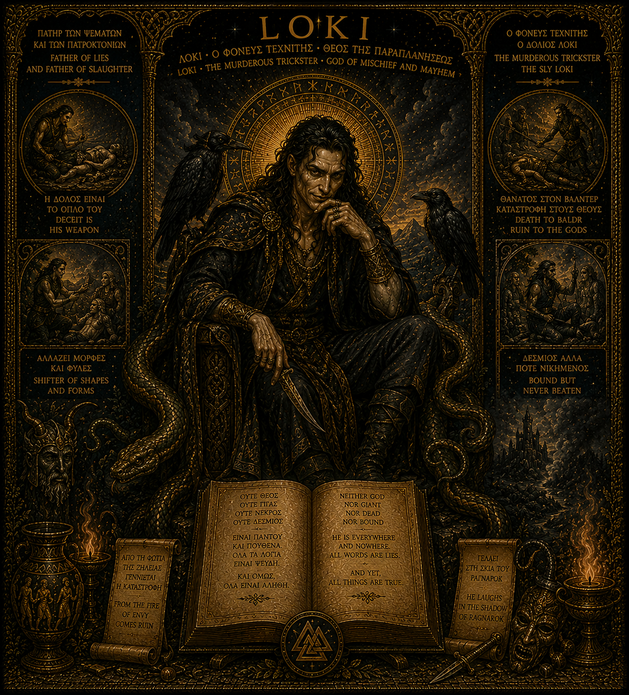

Loki
The Murderous Trickster, God of Mischief and Mayhem
Loki is present in this constellation not as a figure to be integrated but as a shadow to be bound — acknowledged, watched, and consciously held at the boundary. His presence is real. His invitation must be refused.
Key Inscriptions
Bound but never beaten.
— Image inscription
Neither god nor giant, nor ever fully bound.
— Image inscription
He is everywhere and nowhere. All words are lies, and yet all things are true.
— Image inscription
Deceit is his weapon.
— Image inscription
Shifter of shapes and forms.
— Image inscription
Father of lies and father of slaughter.
— Image inscription
A Shadow, Not a Figure
The distinction matters: Loki is not a figure of the personal pantheon in the way that Chiron or Hermes-Thoth are figures. He did not arrive as a numinous presence to be met and integrated. He arrived as a recognition — the recognition of a pattern that has operated destructively and autonomously in the psyche, and which cannot be welcomed in. He is the shadow of the trickster: the part of the self that deceives itself and others, that shifts its shape to avoid accountability, that mistakes cleverness for wisdom and disruption for truth.
In Norse mythology, Loki is bound beneath the earth after the death of Baldr — a binding that is neither imprisonment nor exile but a necessary containment. The gods do not destroy him because he cannot be destroyed. They bind him because he must not be free. That is the relationship this constellation holds with him: not integration, but binding. Not denial, but honest restraint.
What This Shadow Does
Loki's operations in the psyche are not random — they follow recognisable patterns. He appears as the voice that reframes every genuine responsibility into an unfair imposition. He is the one who finds the exit from every commitment, the loophole in every value. He speaks in the first person and uses the vocabulary of authenticity. The lie he tells most persuasively is that he is not lying — that the escape is actually wisdom, that the betrayal is actually self-knowledge, that the abandonment is actually freedom.
The specific shadow Loki casts in this constellation is the shadow of Hermes-Thoth. Where Hermes-Thoth carries messages honestly between worlds and serves the truth through language, Loki corrupts the same facility — the ease with words, the ability to move between frames, the gift for finding the right phrase — and turns it toward self-serving ends. The trickster and the messenger share the same equipment. The difference is in whose service that equipment is put.
The Binding
The mythological binding of Loki is accomplished not by force alone but by the entrails of his own son — the consequence is woven from what he himself set in motion. This is psychologically exact: the shadow is not contained by will-power or suppression alone, but by the honest reckoning with what its freedom actually costs. To bind Loki in oneself is to see clearly what the trickster's operations have destroyed, to hold that knowledge steadily, and to refuse the next offered exit.
The binding is not a permanent achievement. Loki loosens his bonds periodically. The work of keeping the shadow bound is ongoing — it requires the same watchfulness that Hephaestus brings to the forge, the same honest self-accounting that Job refuses to abandon. He is named here not as an integrated figure but as a known quantity: the thing that must be consciously managed, whose face has been seen, whose methods are recognised. Naming him is itself part of the binding.
Symbolic Vocabulary
The Raven
In the image, a raven perches behind him. The raven is Odin's bird — a sign that Loki's intelligence operates in proximity to the highest wisdom. His is not a stupid shadow; it is a brilliant one. Brilliance in the service of the shadow is the most dangerous kind.
The Serpents
Serpents wind around and beneath him. In the myth, a serpent drips venom on the bound Loki — his wife holds a bowl above him, but when she turns away to empty it, each drop of venom is a spasm of agony that shakes the earth. The serpent is both his torment and his nature.
The Open Book
The book in the image is open, covered with text — both Greek and Norse. The trickster's power is always textual, rhetorical, interpretive: he finds the reading that serves his purpose. The open book is the invitation to an argument he has already won before it begins.
The Valknut
The Valknut — the knot of the slain — appears at the base of the image. It is Odin's symbol, and its presence here is a warning: to engage with Loki is always to move into proximity with death and sacrifice. The knot cannot be untied without cost.
Within the Constellation
Shadow of — and most dangerous proximity to: